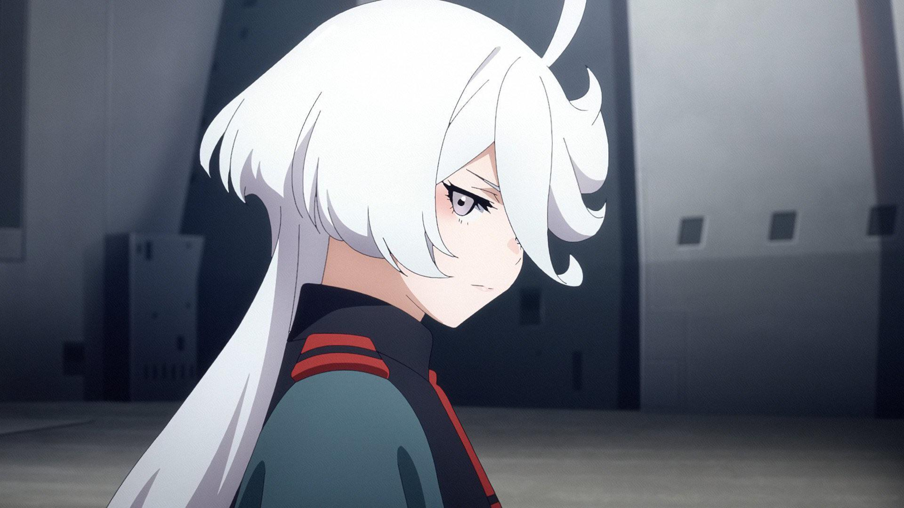
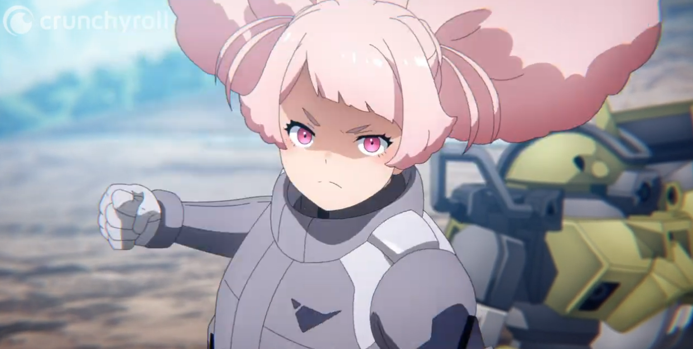
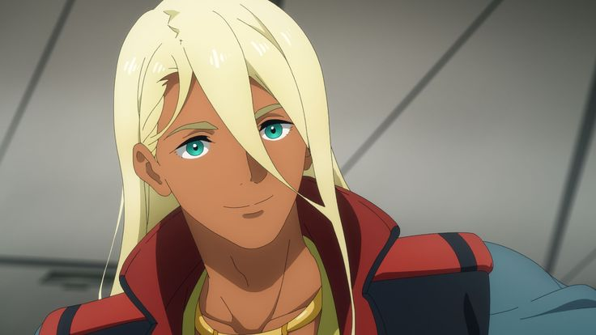
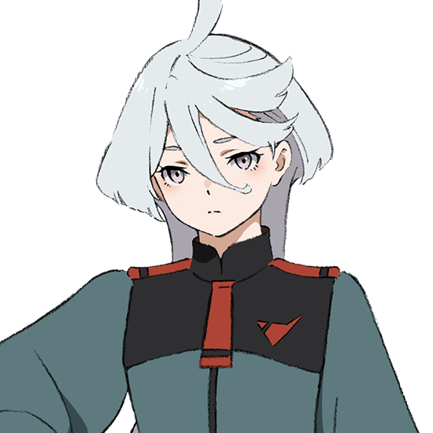
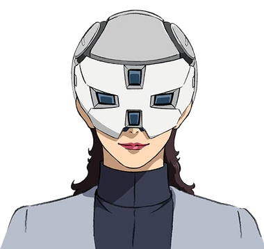

A second-year student at the Asticassia School of Technology, Sulleta hails from the colony planet of Mercury and transferred recently to Asticassia. Sulletta finds herself at the center of a conflict with the Gundam technology of her mobile suit, the Aerial. A spacian by birth and from a fringe colony, she faces disdain from students coming from more prosperous colonies and prestigious corporations

Heir to the Jeturk Heavy Machinery Corporation, Guel is known for being the top pilot at Asticassia and his disdain for fringe colonists from around the solar system. He respects skill and finds himself in conflict with other students who get in his way.
Guel Jeturk

Daughter of the Benerit Corporation's President, Miorine is a second year student of the management department of the Asticassia. Her fate becomes intertwined with Sulleta's when she becomes the wager in a duel between Sulleta and Guel Jeturk. Her headstrong nature
Miorine Rembran

A first year student in the piloting department of Asticassia, Chuatury hails from Earth and as such is not part of the colonists who ventured out to settle new planets. As an Earthian she faces discrimination from other colonists for her origins and being from a less sophisticated background. At first she holds a grudge against Miorine and Sulleta but quickly overcomes that as they compete against the other corporations at Asticassia

Sulleta's mysterious mother and the president of Mercury's Shinsei Corporation, Prospera lost her arm and suffered head injuries due to the environmental conditions of Mercury and needed new technology to adapt to the new environment. The technology behind Sulleta's Aerial was also used in developing her prosthetics and subjected her corporation to scrutiny for using forbidden technology.